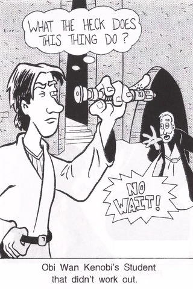

The Arecibo Legacy Fast ALFA Survey
Undergraduate ALFALFA Team
Summer Research Page
Eight summer stipends will be awarded each year to members of the UAT.
The deadline for Summer 2011 is 02-16-2011 ANYTIME UT
Students the first thing you need to do is find yourself a faculty mentor! Sit down with your mentor and persuade them to adopt you for the summer, tell them how you are motivated, hard working and wanting to push the frontiers of knowledge using the world's best blind survey of extragalactic HI. Tell them you watched the presidents speech and yes this summer is your Sputnik moment. Work on your proposal with your mentor using the application form below. Your mentor will write a budget outline and a letter of support. Your mentor will submit the complete application to Dr Sarah Higdon. Be mindful of your application - "late submit not!" Make sure you have given a draft of your application form to your advisor at least one week before the deadline.
- Research Application Form for Summer 2011
- Faculty budget guidelines

[macworld.com]
Last modified: 26 Jan 2011 by Sarah